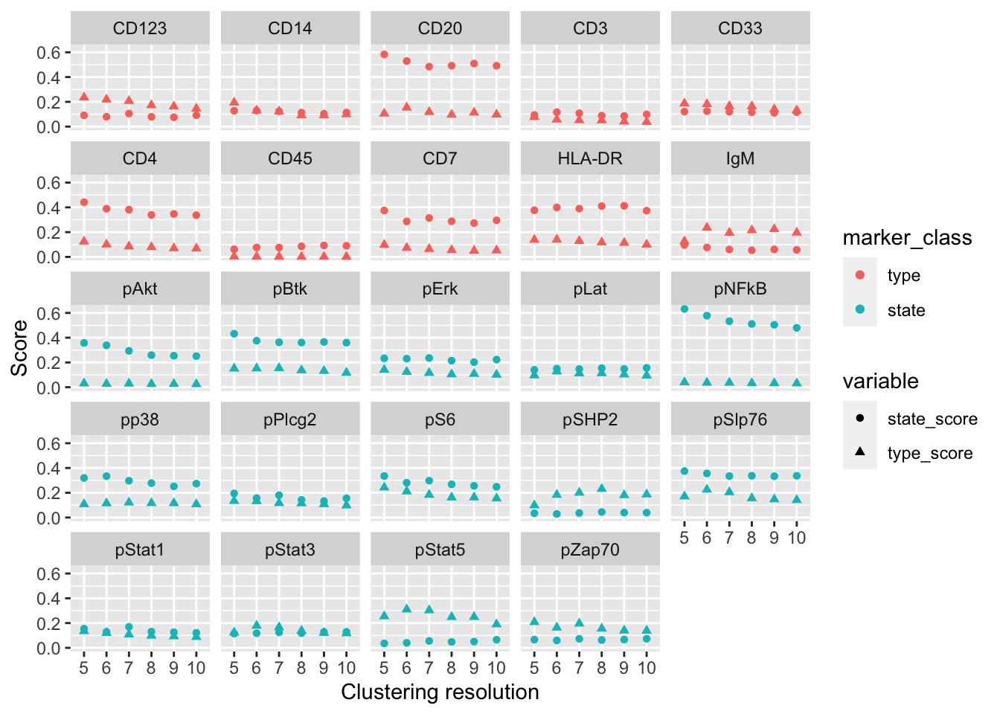
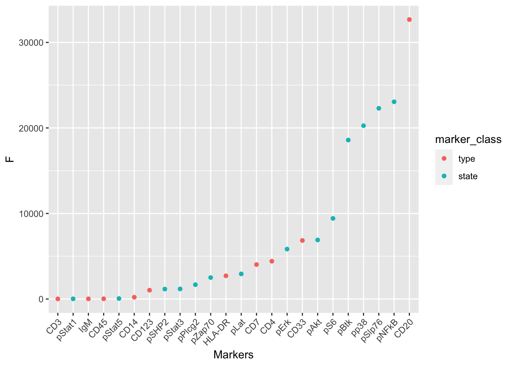
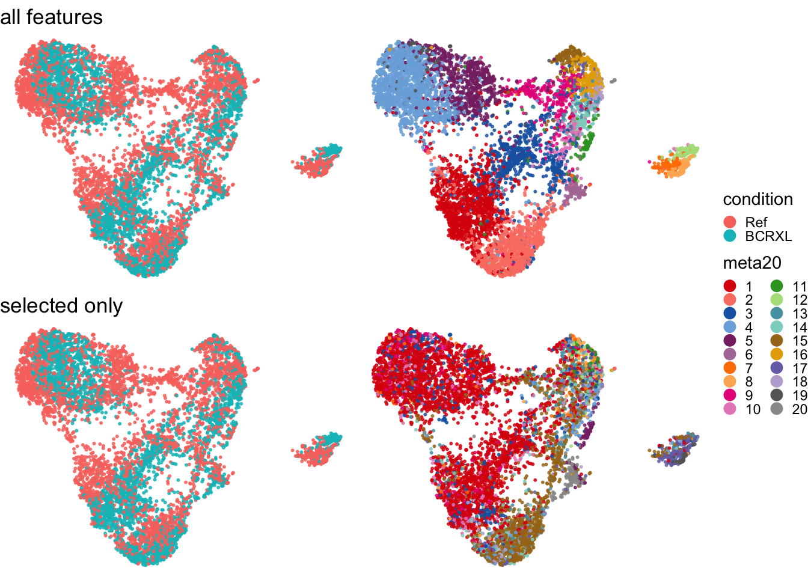
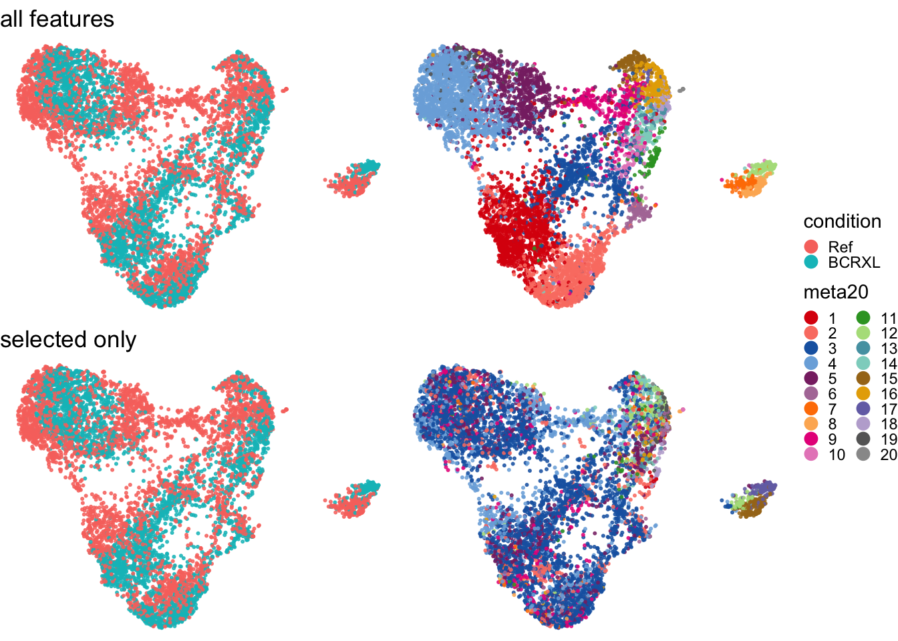

Code
library(dplyr)
library(tidyr)
library(diffcyt)
library(scuttle)
library(ggrepel)
library(ggplot2)
library(tidytext)
library(CATALYST)
library(patchwork)
library(reshape2)
library(edgeR)# download panel & metadata tables
.rd <- tempfile(rd <- "PBMC8_panel_v3.xlsx")
.md <- tempfile(md <- "PBMC8_metadata.xlsx")
url <- "http://imlspenticton.uzh.ch/robinson_lab/cytofWorkflow"
download.file(file.path(url, rd), destfile = .rd, mode = "wb", quiet = TRUE)
download.file(file.path(url, md), destfile = .md, mode = "wb", quiet = TRUE)
# load tables & measurement data
rd <- readxl::read_excel(.rd)
md <- readxl::read_excel(.md)
fs <- HDCytoData::Bodenmiller_BCR_XL_flowSet()
# fix sample & group ordering
md$condition <- factor(md$condition, c("Ref", "BCRXL"))
md$sample_id <- factor(md$sample_id, md$sample_id[order(md$condition)])
# construct 'SingleCellExperiment'
(sce <- prepData(fs, rd, md, features = rd$fcs_colname))class: SingleCellExperiment
dim: 24 172791
metadata(1): experiment_info
assays(2): counts exprs
rownames(24): CD3 CD45 ... HLA-DR CD7
rowData names(3): channel_name marker_name marker_class
colnames: NULL
colData names(3): sample_id condition patient_id
reducedDimNames(0):
mainExpName: NULL
altExpNames(0):dims <- list(5,6,7,8,9,10)
#.all_score(x=sce, dim = 3)
res_by_resolution <- lapply(dims, .all_score, x = sce)
names(res_by_resolution) <- dims
res_df <- melt(res_by_resolution, id.vars = c("marker_id", "marker_class"))
ggplot(data = res_df, aes(x = factor(L1, levels = c(5,6,7,8,9,10)), y = value, shape = variable, color = marker_class)) + geom_point()+ facet_wrap(~marker_id) + xlab("Clustering resolution") + ylab("Score")
Using classic mode.
set.seed(seed <- 7043)
#(sel <- with(res, marker_id[score > median(score)]))
#res <- .all_score(sce, dim = 10)
sel <- res$marker_id[res$state_score < 0.15]
sce2 <- runDR(sce, features = sel, cells = 500)
sce2 <- cluster(sce,
xdim = 10, ydim = 10, features = sel,
seed = seed, verbose = FALSE)
plotDR(sce, color_by = "condition") + ggtitle("all features") +
plotDR(sce, color_by = "meta20") +
plotDR(sce2, color_by = "condition") + ggtitle("selected only") +
plotDR(sce2, color_by = "meta20") +
plot_layout(nrow = 2, guides = "collect") &
theme_void() & theme(legend.key.size = unit(0.5, "lines"))
set.seed(seed <- 7043)
#(sel <- with(res, marker_id[score > median(score)]))
#res <- .all_score(sce, dim = 10)
sel <- res$marker_id[res$type_score > 0.1]
sce3 <- runDR(sce, features = sel, cells = 500)
sce3 <- cluster(sce,
xdim = 10, ydim = 10, features = sel,
seed = seed, verbose = FALSE)
plotDR(sce, color_by = "condition") + ggtitle("all features") +
plotDR(sce, color_by = "meta20") +
plotDR(sce3, color_by = "condition") + ggtitle("selected only") +
plotDR(sce3, color_by = "meta20") +
plot_layout(nrow = 2, guides = "collect") &
theme_void() & theme(legend.key.size = unit(0.5, "lines"))